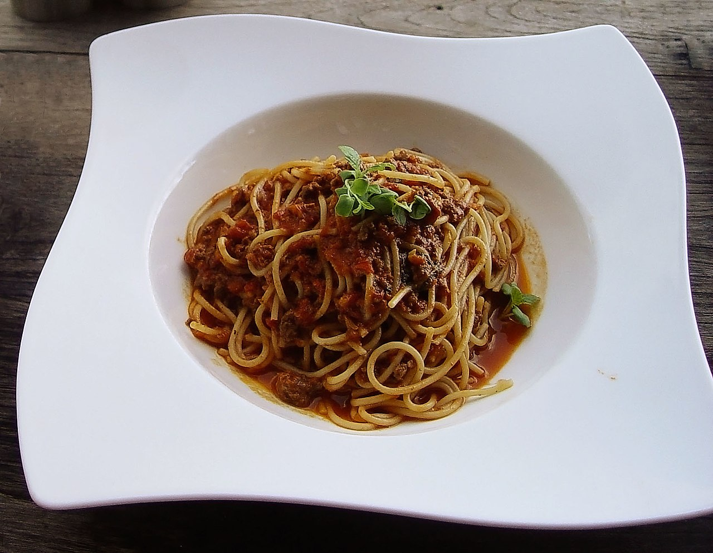

I love me some good old fashioned Italian Pasta.
20 minutes to make, quick and easy, delicious for the whole family.
Here is some more useless text describing just how good this dish tastes, but why
am I even including this, everyone's had this at least once before, right?
Ingredients
Pasta
- Flour
- Something else
- Everything else
- A singular piece of basil
Steps
- Chuck your pasta into a pot of boiling water
- Watch the bubbles bubble
- Cook your beef mince with some nice spices (here is where you throw in that one piece of basil)
- Grate some Parmesan cheese, until it becomes a thin veil atop your creation
Return to top
Return to main page